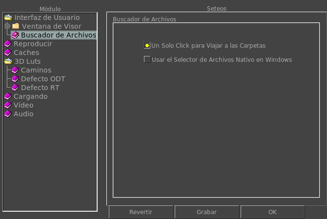

|  |
Cuando esta opción esta activa, un sólo click te permitirá navegar a través de los directorios. Cuando esta inactiva, tendrás que cliquear dos veces en la carpeta para navegar en ella. Aquí podes elegir usar el buscador de archivos nativo de Windows en vez del que viene con mrViewer. |